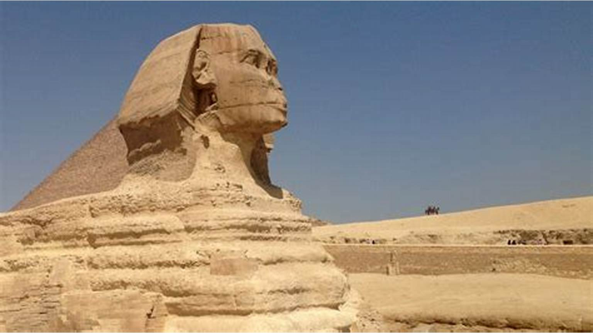

Great Sphinx of Giza
The Great Sphinx of Giza, with its lion’s body and human head, symbolizes the strength and authority of ancient Egyptian rulers.
Likely built around 2500 BCE to guard the pyramids, it represents the fusion of human intelligence with animal power.
This enigmatic statue continues to embody the mystery and grandeur of ancient Egypt.
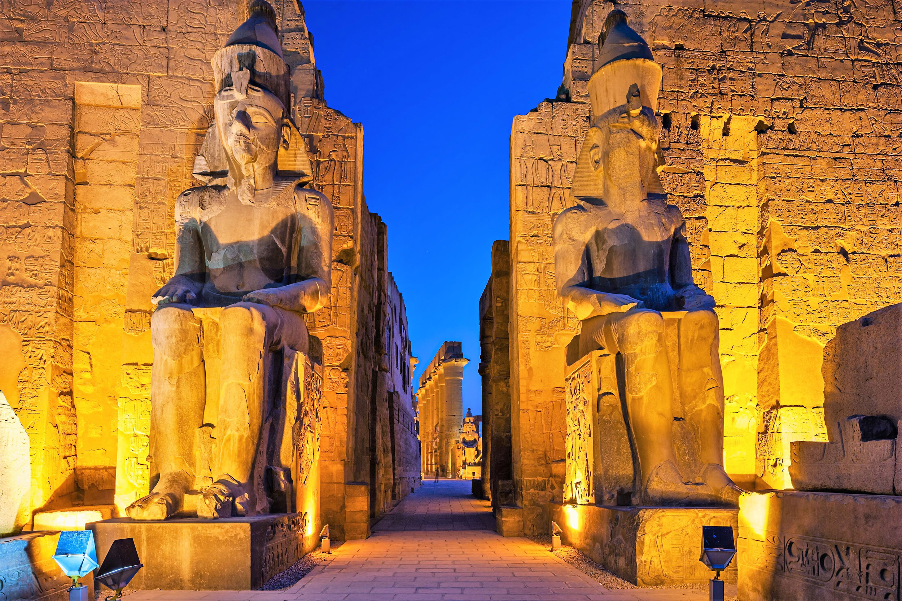
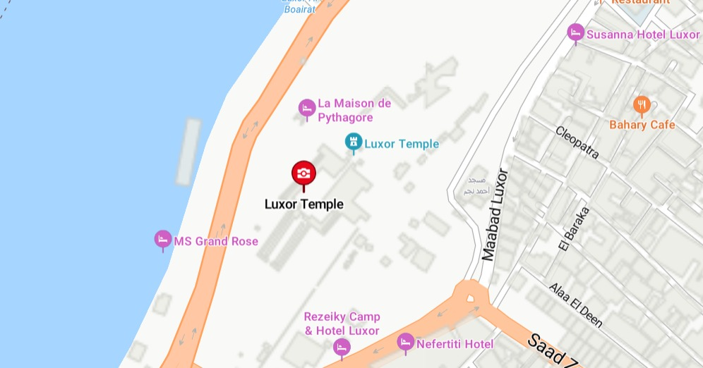
Luxor Temple
Luxor Temple, dedicated to the Theban triad of Amun, Mut, and Khonsu, is a key religious site in ancient Egypt.
Built during Amenhotep III's reign and expanded by Ramses II, it was central to the Opet Festival, celebrating the pharaoh's divine connection.
Its impressive architecture and reliefs symbolize the power of the pharaohs and offer insights into ancient Egyptian culture and religion.
.jpeg) 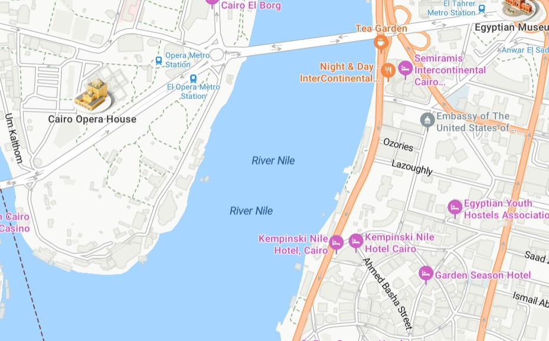
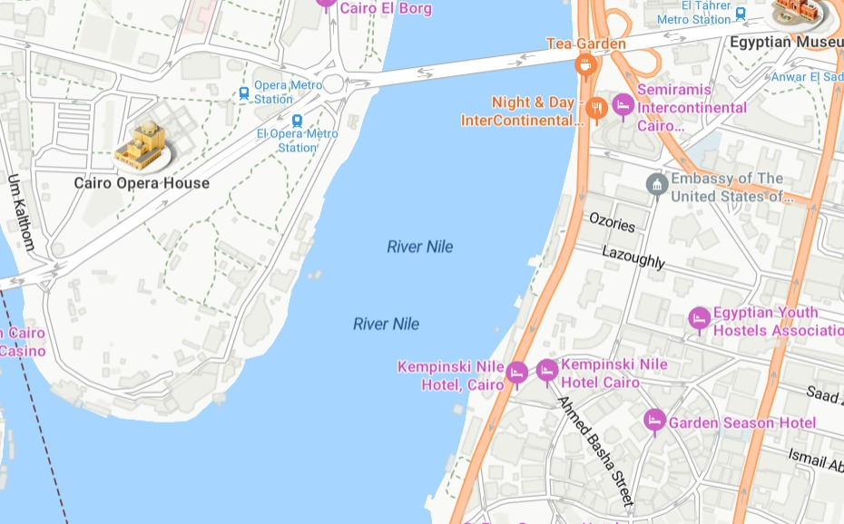
The Nile River
The Nile River is essential to Egypt, providing fertile soil and irrigation that enabled agriculture to thrive in a desert landscape.
As the longest river in the world, it facilitated trade and communication between regions, playing a key role in the economy and cultural exchange.
Revered as a divine gift, the Nile held immense religious significance, symbolizing life and continuity in ancient Egyptian civilization.
.jpeg) 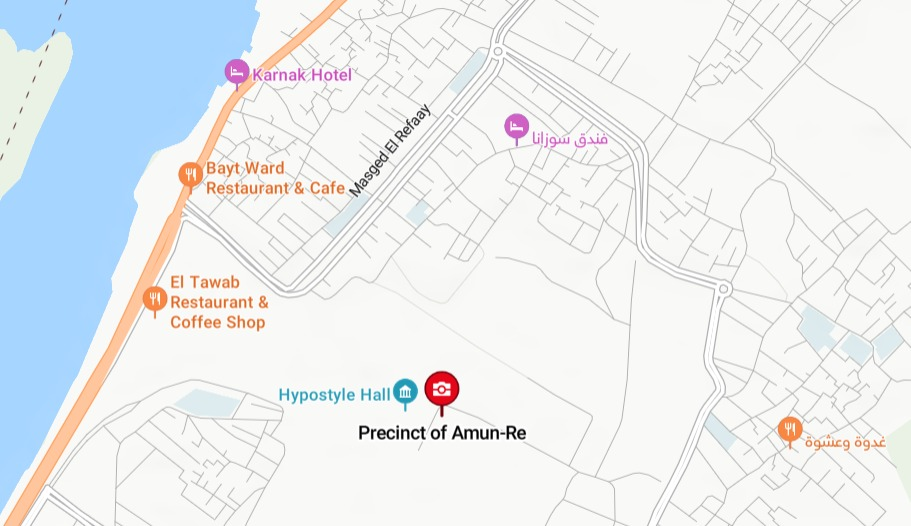
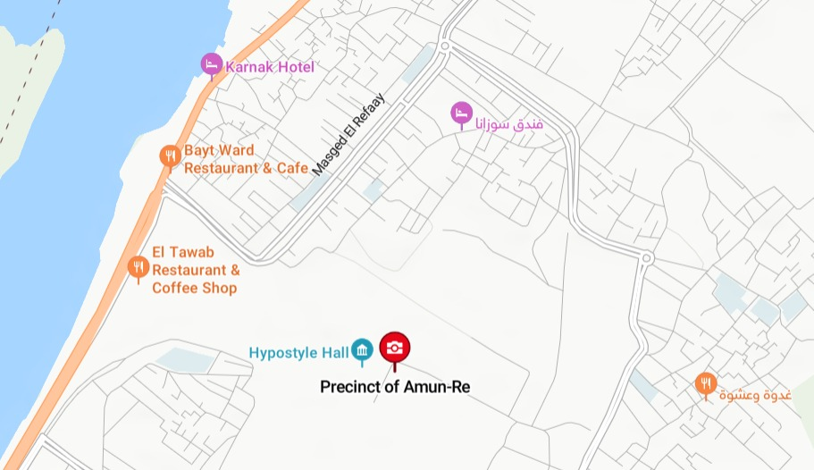
Karnak Temple
Dedicated to the Theban gods, especially Amun-Ra, this vast temple complex includes enormous columns, statues, and obelisks.
It was built over 2,000 years by different pharaohs, each adding to its magnificence.
.jpeg) 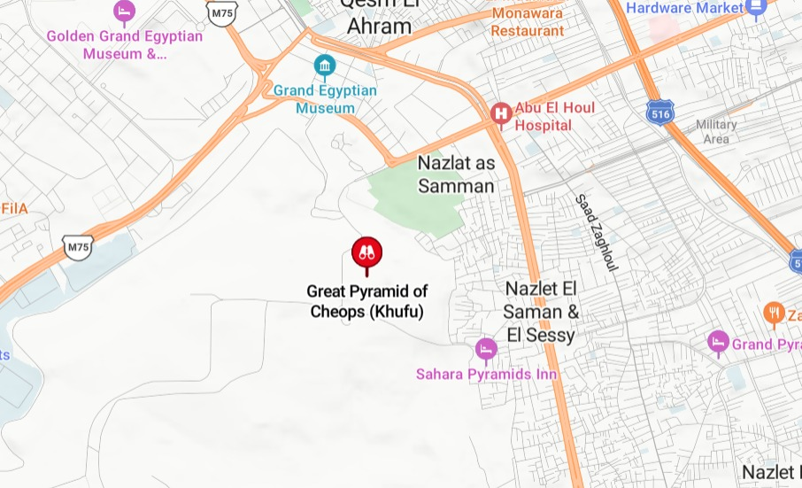
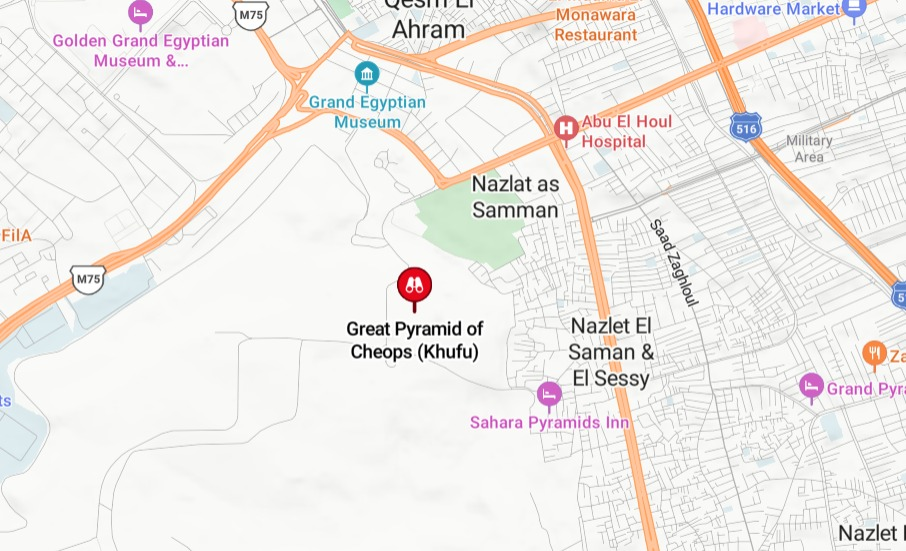
The pyramids of Giza
The pyramids of Egypt, particularly the Great Pyramid of Giza, are iconic symbols of ancient civilization and engineering prowess.
Built as monumental tombs for pharaohs during the Old Kingdom, they reflect the Egyptians' beliefs in the afterlife and the importance of
preserving the deceased for eternity. These structures demonstrate advanced knowledge of mathematics and construction techniques,
influencing architectural practices throughout history.
.jpeg) 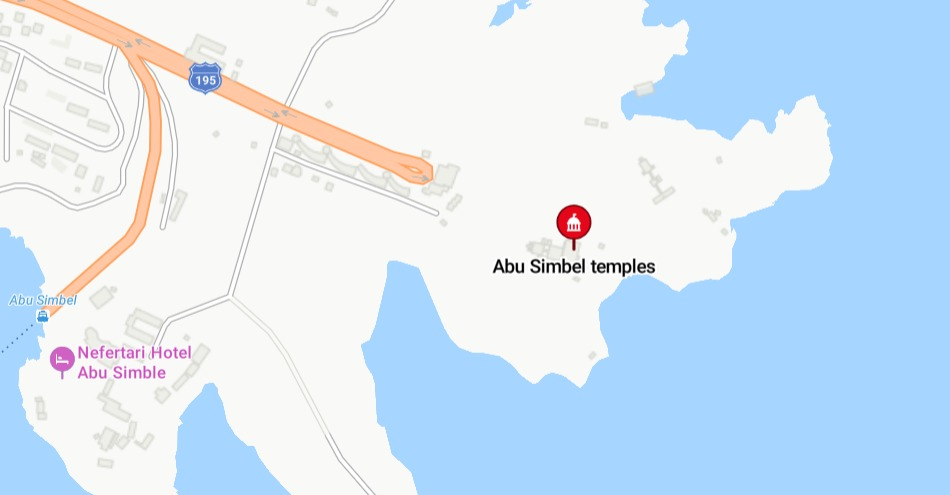
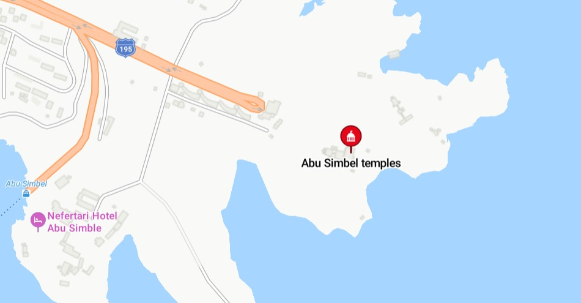
Abu Simbel Temples
Built by Ramses II, the twin temples of Abu Simbel were carved directly into the mountainside as a demonstration of his power.
They were relocated in the 1960s to avoid being submerged by the Aswan High Dam reservoir,
making it a significant feat in modern engineering as well.
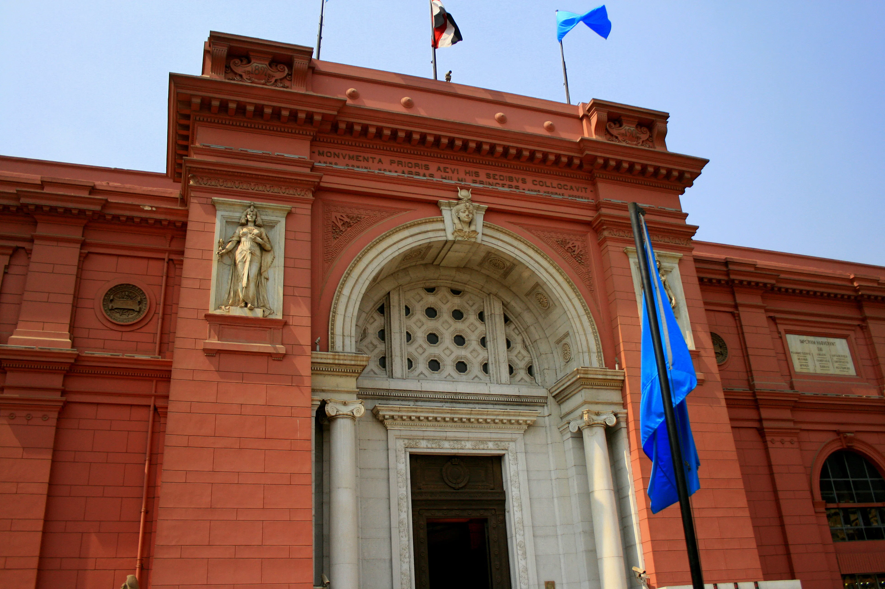
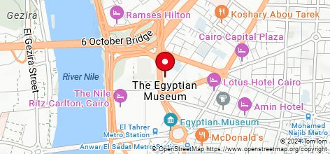
The Egyptian Museum
The Egyptian Museum in Cairo, established in 1902, is one of the world's most significant archaeological museums,
housing an extensive collection of ancient Egyptian artifacts. It showcases over 120,000 items, including the treasures of Tutankhamun and
statues from pharaohs' tombs. The museum plays a crucial role in advancing the study of Egyptology, preserving
and interpreting Egypt's rich history and culture for future generations.
.jpeg) 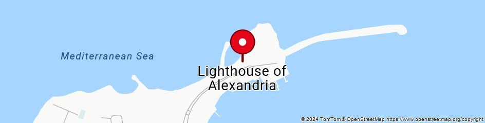
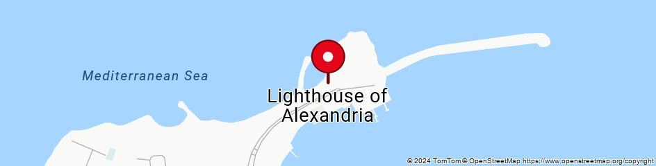
Lighthouse of Alexandria
The Lighthouse of Alexandria, built in the 3rd century BCE on Pharos Island, was one of the Seven Wonders of the Ancient World and a remarkable feat
of ancient engineering. Standing about 100 meters tall, it guided sailors safely into Alexandria's busy harbor, promoting trade and cultural exchange
in this vital ancient city. Its design set the standard for future lighthouses, and its legacy endures as a symbol of Alexandria's historical
significance as a center of learning and commerce.